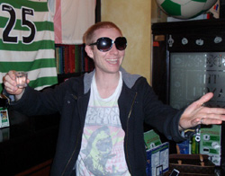
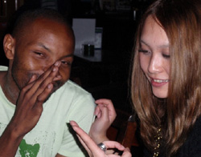

|
Hachioji Park, Saturday 18th October
Last week was a brutal five nil battering of the embassy attaches, this week a merciless seven nil spanking of the Swiss Kickers. Like Capello’s England, “they’re clearly not the finished article.” I don’t want to fall for the old English sports writer’s trap of hyping an average team after one or two results against mediocre sides like Kazakhstan, but it is quite thrilling to imagine what kind of performances BFC could be capable of when they really hit their stride.
This battle of long time rivals on a mild Saturday evening was as lopsided as never before. The Swiss have been trying to rebuild after the loss of key players and there were several new young Japanese faces who had made the trip to Hachioji. Both teams started brightly under the floodlights but the fact that the Swiss haven’t quite jelled was obvious early on and BFC’s unchanged line up from last week started picking locks early on. Ten minutes in and a BFC buzzing with confidence had already got on the scoreboard.
 Carlos pulling the strings in the middle played a direct ball to Alex Sahara upfront, who with back to goal flicked it Ronaldinho-esquely off the outside of his left boot and onto the path of Pablo lurking on the right edge of the box. The Swiss backline had clearly been caught napping and even their linesman suffering from a Doctor Strangelove syndrome could do nothing about this one. Pabs had acres of space and time to take a touch before planting it firmly with his right foot across the face of goal into the far left. Any proper keeper would have done better to come out and at least cut down the angle but their real keeper arrived about 15 min late, presumably from another operation to stick more titanium into those experienced knees. Not that he did any better than temporarily stem the tide with a few saves rather than stop the deluge.
The second goal came after another excellent BFC spell where the ball was moved around well and several decent chances created. Alex, now trying to impress his posse of adorable/adoring fans, applied the finishing touch to yet another sweeping move down the left involving about 4 or 5 players passing swiftly and playing economical two touch football to open up the Swiss defence with ease.
Now cruising with only 20 minutes gone and buoyed by a two-goal buffer, Morson felt comfortable introducing Keisuke upfront for Alex, Evs in the middle for Pabs, and a bit later Garry on the right for Saco and Ryo in centerback for the gaffer himself. Everyone slotted in well and Keisuke soon came close to scoring a goal of the season contender when he connected perfectly with a deep cross from Shosuke sashaying on the right, but his thundering volley hissed just a few inches wide of the left post. Jon Day had a clear goal denied by the Swiss keeper’s bionic bipeds after Taka had done great work to overlap on the left and hit the byline before cutting it back to Jon on the near post for the snapshot. BFC looked to be firing on all cylinders but some complacency in the middle of the park saw them inviting Swiss to come back into the game in the last ten of the first half. Brian who had braved a cold to start at the back was shouting away in his hoarse
voice when a few people started getting caught in possession and their midfielders were allowed too much time on the ball. Although the defence did well to absorb the pressure, there was a scare with about five minutes to go in the primo tempo when the Swiss handy man Florin orchestrated a good move and the final ball was played to their striker on the edge of the box. He had time to line up his shot and he hit a good grasscutter past the onrushing defender. This was perhaps the only time Teppy in goal was called upon and he showed good concentration to get down quickly to his right and hold on superbly in the face of another striker sniffing around for any spills.
The Swiss must have felt hard done for not having a goal to show for that good spell and the dynamics of the game would probably have changed had they scored there. Cliché again, but touché to them for like the old Swiss, they never stopped competing to the very end and that is why many people would like to see them rearm themselves soon enough and back to their usual beautiful passing game.
 Half time talk was surprisingly unPerryMason-like in its conciseness and the fact that accusing fingers weren’t being pointed to the aforementioned culprits caught in possession. The gaffer’s verdict was to crank up the gears again, kill the game in the first ten and do away with any hopes the Swiss had of sneaking back. Duly obeyed. About ten minutes in, Evans now resisting the urge to force himself into tight areas played a quick ball into space behind the right back for Keiuske to run onto. The new wonder boy surprised even himself by passing the ball to Jon on the edge of the box. JD took a touch and thought of passing it to Carlos to his right before deciding to go for it with no defender closing down. From a stand still position he impressively scooped the ball from under him and over the flailing arms of the slow leaping keeper. Precision, not power. 3 nil, and a dejected Swiss must have been asking themselves what more was on the way with
almost a half hour still to play. Answer: Misery in the form of 4 more goals.
Danny boy finally breaking his duck (sorry Dan, can’t remember the goal), Keisuke taking his season tally to three from two games, Alex Sahara’s fine low shot into the bottom right for his second of the game, and Evs capping it off with a tantalizing textbook Thierry Henry curl from just inside the box past the despairing hands of the keeper into the far right corner. Keisuke’s goal however was the pick of them all, not for its beauty but rather the circumstances in which he scored. It was a classic selfish striker’s goal where after great footwork to jingle past his marker on the right he completely ignored about 3 or 4 for screaming teammates arriving in the six-yard box and went for glory from a very tight angle. The keeper saved the first time and Case-K was very lucky that the ball broke kindly for him to simply tap in. The boy is good and like a good striker his first thought is goal, but how much better will he be when he finds out that
passing is a legitimate football move.
The gaffer wanted me to mentiont hat it wasn’t all about attacking football and that the defence was solid throughout. So I will mention that Brian and Morson looked incorrigible in the heart of defence, Ryo, Saco, Garry and Taka on both sides putting in good shifts to ensure Teppy kept another clean sheet. Pablo in the middle again showed why he is quickly gaining reputation as the iron man in BFC when he went in hard jostling with Florin for a fifty-fifty ball. It didn’t look malicious but the power was there and Florin ended up in a heap yodeling, or maybe just honestly screaming in pain. An ambulance had to be called because the Swiss man had apparently dislocated his shoulder. Pablo expressed his sincere remorse, but I wouldn’t want to be a midfielder lining up against him. Watch out Mike McGirr.
It was perhaps the first time in their history that BFC had shipped seven past the Swiss and even Gordie the official team historian joined the celebrations afterwards in a town the captain has fondly christened “the theatre of dreams.” Bear in mind that he is a Liverpool diehard who is given to screaming “back of the net!” when the scousers shamelessly crawl back against ten men, the only time those lucky buggers seem to remember how to play football. And it was early the next morning when the tequilas and the shenanigans came to a halt deep in the filthy end of that town to the east of Shinjuku station. Who said the BFC don’t have a beer together? Just ask the Shinjuku crows scrounging in garbage bags at dawn or the sleepy WAGS who had to open doors on Sunday morning.
It’s a rest next week before the defending champs look to extend their fine form against newly promoted Lions on the same Hachioji turf the week after. Meanwhile, the two big questions in the league remain. With BFC now matching the Hibs for points and even goal difference, how long till the legendary Hibernian vertigo starts? And as the battle for the coveted number eleven jersey heats up with Alex and Shosuke staking claim by racking up one and two assists respectively, can Dan hold on to it? Stay tuned..
Match report by Para Mexico
|